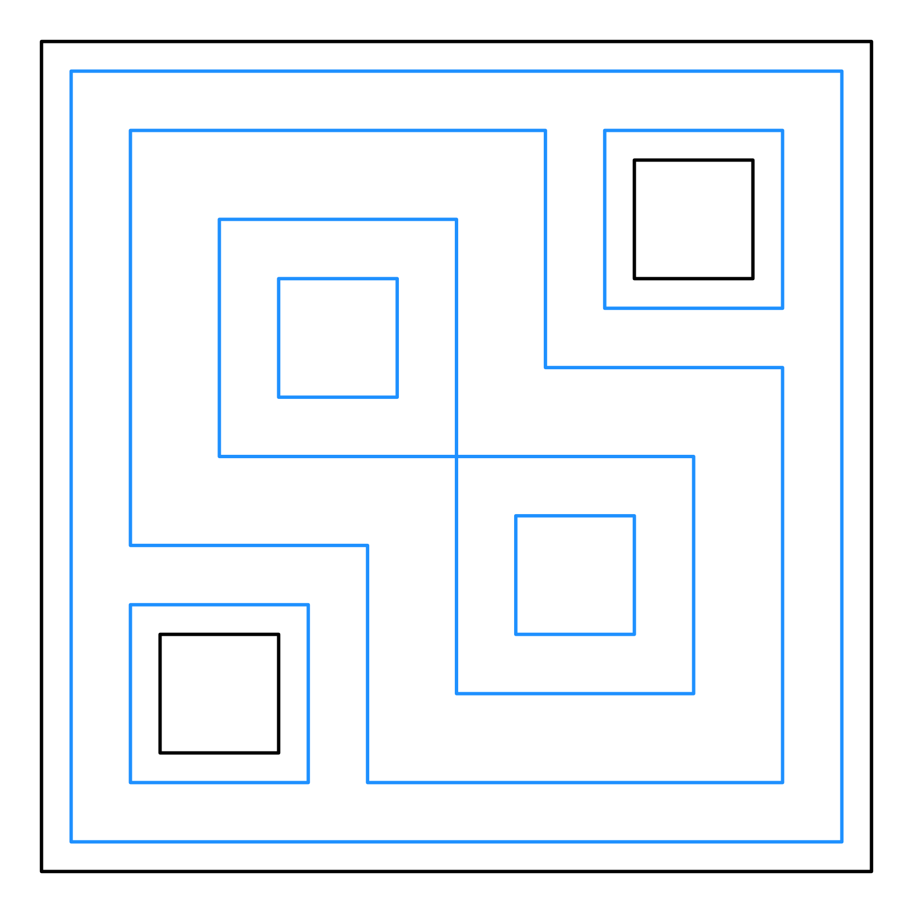
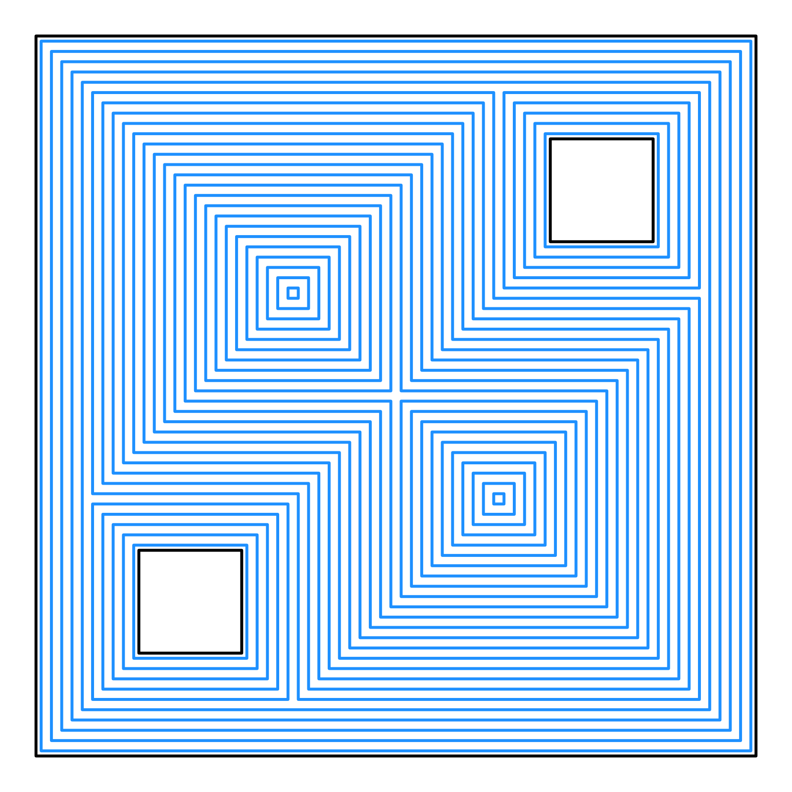
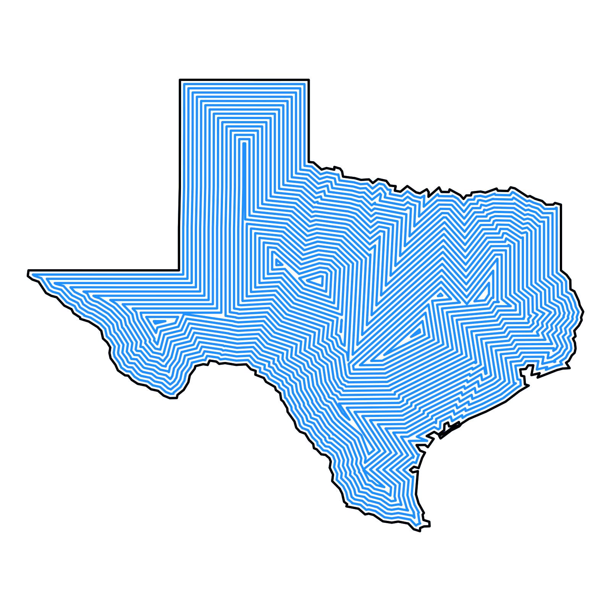
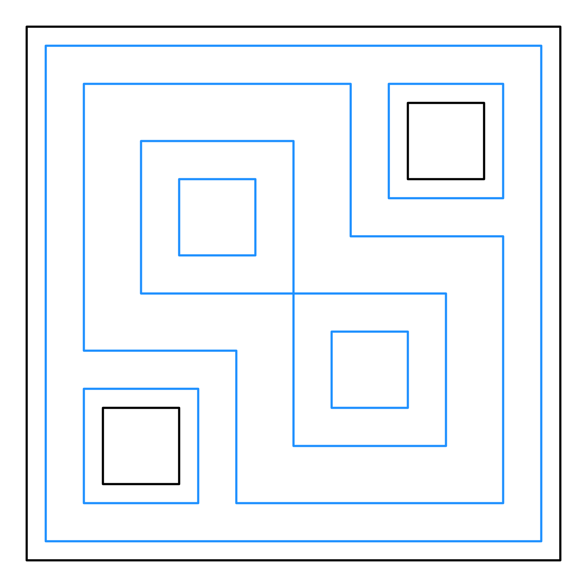
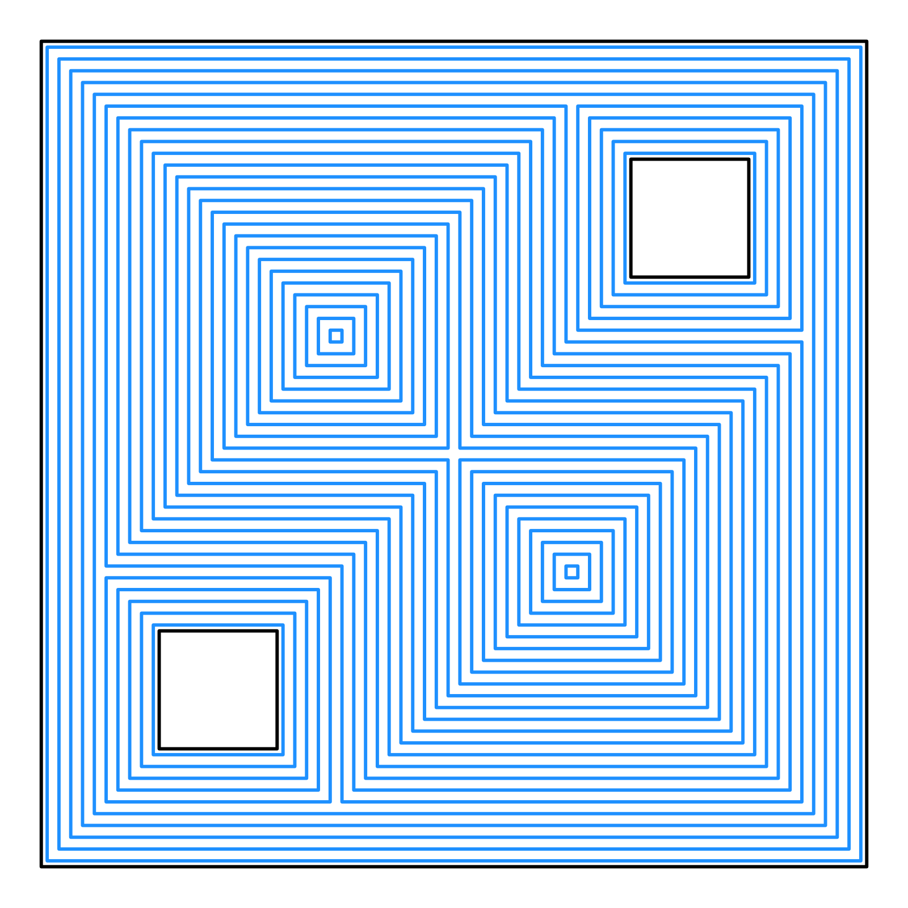
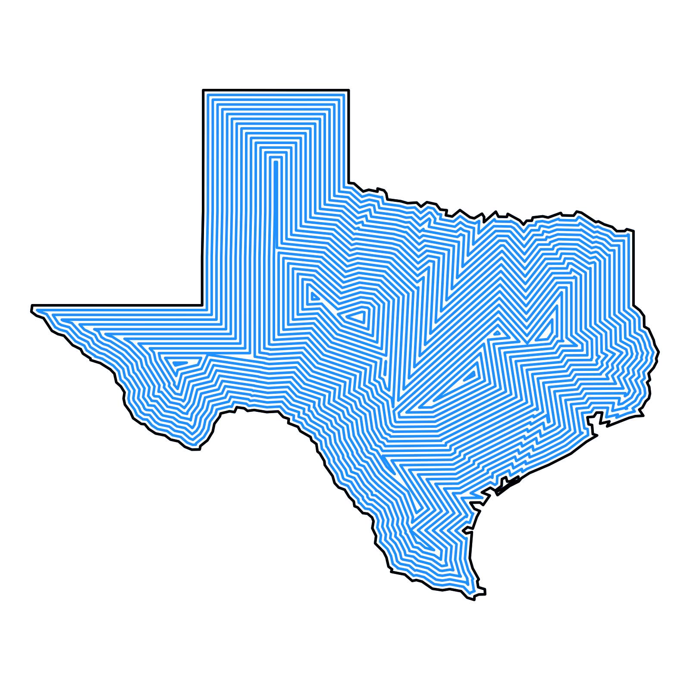

This function generates an interior offset polygon from a straight skeleton.
Examples
# Simple polygon example
simple_poly = matrix(c(0,0, 3,0, 3,3, 0,3, 0,0), ncol=2, byrow=TRUE)
skeleton = skeletonize(simple_poly)
offset_polys = generate_offset_polygon(skeleton, c(0.25, 0.5))
print(offset_polys)
#> [[1]]
#> [[1]]
#> $offset_0.250000_1
#> x y
#> 1 0.25 0.25
#> 2 2.75 0.25
#> 3 2.75 2.75
#> 4 0.25 2.75
#>
#> attr(,"class")
#> [1] "rayskeleton_offset_polygons" "list"
#> attr(,"number_polygons")
#> [1] 1
#>
#> [[2]]
#> $offset_0.500000_2
#> x y
#> 1 0.5 0.5
#> 2 2.5 0.5
#> 3 2.5 2.5
#> 4 0.5 2.5
#>
#> attr(,"class")
#> [1] "rayskeleton_offset_polygons" "list"
#> attr(,"number_polygons")
#> [1] 1
#>
#> attr(,"class")
#> [1] "rayskeleton_offset_polygons_collection"
#> [2] "list"
#> attr(,"skeleton")
#> $nodes
#> id x y time edge
#> 1 1 0.0 0.0 0.0 TRUE
#> 2 2 3.0 0.0 0.0 TRUE
#> 3 3 3.0 3.0 0.0 TRUE
#> 4 4 0.0 3.0 0.0 TRUE
#> 5 5 1.5 1.5 1.5 FALSE
#>
#> $links
#> source destination edge source_time destination_time
#> 1 4 3 TRUE 0 0.0
#> 2 3 2 TRUE 0 0.0
#> 3 2 1 TRUE 0 0.0
#> 4 1 4 TRUE 0 0.0
#> 5 1 5 FALSE 0 1.5
#> 6 2 5 FALSE 0 1.5
#> 7 3 5 FALSE 0 1.5
#> 8 4 5 FALSE 0 1.5
#>
#> attr(,"class")
#> [1] "rayskeleton"
#> attr(,"original_vertices")
#> x y
#> [1,] 0 0
#> [2,] 3 0
#> [3,] 3 3
#> [4,] 0 3
#> attr(,"original_holes")
#> list()
#> attr(,"number_offsets")
#> [1] 2
#> attr(,"original_vertices")
#> x y
#> [1,] 0 0
#> [2,] 3 0
#> [3,] 3 3
#> [4,] 0 3
#> attr(,"original_holes")
#> list()
#>
#> attr(,"class")
#> [1] "rayskeleton_polygons" "list"
# Polygon with hole example
# Outer polygon
vertices = matrix(c(0,0, 7,0, 7,7, 0,7, 0,0), ncol = 2, byrow = TRUE)
# Holes inside the polygon
hole_1 = matrix(c(1,1, 2,1, 2,2, 1,2, 1,1), ncol = 2, byrow = TRUE)[5:1,]
hole_2 = matrix(c(5,5, 6,5, 6,6, 5,6, 5,5), ncol = 2, byrow = TRUE)[5:1,]
skeleton = skeletonize(vertices, holes = list(hole_1, hole_2))
plot_skeleton(skeleton)
 #Generate three offsets
plot_offset_polygon(generate_offset_polygon(skeleton, c(0.25,0.75,1.5,2)))

#Generate many offsets
plot_offset_polygon(generate_offset_polygon(skeleton, seq(0,2.5,by=0.1)+0.05))

# Skeletonize and plot an {sf} object
if(length(find.package("spData",quiet = TRUE)) > 0) {
us_states = spData::us_states
texas = us_states[us_states$NAME == "Texas",]
texas_skeleton = skeletonize(texas)
plot_offset_polygon(generate_offset_polygon(texas_skeleton, seq(0, 2.5, by = 0.1)),
border = heat.colors,
linewidth = 1)
}

#Generate three offsets
plot_offset_polygon(generate_offset_polygon(skeleton, c(0.25,0.75,1.5,2)))

#Generate many offsets
plot_offset_polygon(generate_offset_polygon(skeleton, seq(0,2.5,by=0.1)+0.05))

# Skeletonize and plot an {sf} object
if(length(find.package("spData",quiet = TRUE)) > 0) {
us_states = spData::us_states
texas = us_states[us_states$NAME == "Texas",]
texas_skeleton = skeletonize(texas)
plot_offset_polygon(generate_offset_polygon(texas_skeleton, seq(0, 2.5, by = 0.1)),
border = heat.colors,
linewidth = 1)
}
